| Kindle Unlimited（ キンドル アンリミテッド ） おすすめ エッセイ コミック １１選！ 全部 読み放題！ 「この漫画が泣ける、笑える、グッとくる！」 電子書評 | |
| 山岡 総一郎 | |
| denshishohyou (2018) | |
山岡総一郎
電子書評
本書はキンドルアンリミテッドで配信されているエッセイ系コミックの中から11 作品を厳選し、簡単な感想を交えてご紹介するカタログ的な書評集です。
妊娠、出産、育児、難病、転職、変なお店の潜入レポに超絶可愛いペットのお話、さらには東日本大震災のメディアでは語られない体験談まで、幅広くご紹介させていただきます。
全作品キンドルストアへのリンクを掲載しておりますので、タップ一つで気になった作品を読みにいけます。
膨大な書籍の中から自分に合った作品を見つけ出す喜び。本書がその一助となれば幸いです。
２０１８年３月 電子書評 山岡総一郎
※キンドルアンリミテッドではそれまで読めていた作品が突然配信停止となる場合もございますので、掲載している内容はあくまで本書刊行時（２０１８年３月）のデータであることを何卒ご容赦ください。
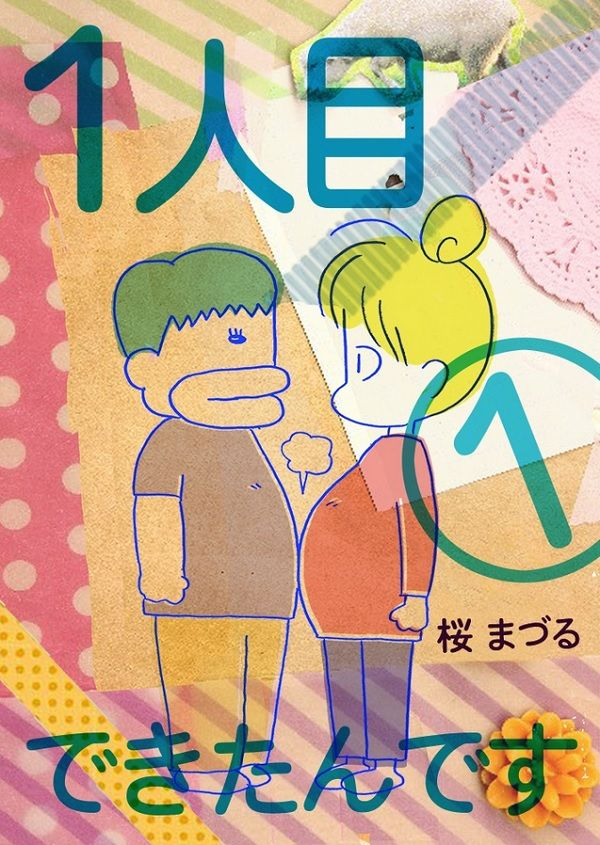
【著者】桜 まづる 先生
【ＫＩＮＤＬＥストア】 https://www.amazon.co.jp/dp/B01AIHF6KS/
タイトル通り第一子の妊娠、出産、赤ちゃんとの生活と、保育園に預けての復職までが描かれています。
年齢のことがありますから、経済的な不安を抱えながらも困難を覚悟で子供を作るご家庭って多いと思うんです。
作中当時の桜先生のご状況もまさにそのようで、旦那さんの勤め先は赤字続きだし、住まいは赤ちゃんと三人でも１Ｋ。
それでも懸命に節約しながらやっていこうとする姿勢にはとても親近感を覚えますし、エルゴや百均のケチャップディスペンサーなど、この作品内でオススメされるアイテムは見栄やファッションではなく、本当に赤ちゃんに必要なものなんだなと大変参考になりました。
絵柄や全体的な雰囲気は可愛くて淡々と落ち着いた調子なんですが、随所にエグいところも見られます。
特に、出産時の病院。
膣と肛門のあいだが裂けた
とか、脱肛した
とか、母乳にこだわりすぎて赤ちゃんが危険な目に遭わされた
とか、本当に最悪。
命をかけた人生の大一番でこんな人たちに頼らなきゃいけないなんて、本当に可哀想。もっと罵詈雑言並べて悪魔のように描いてもいいのに、それをしないからより一層悲惨さなことのように感じました。
「２人目まだなんです
」、「２人目できたんです
」と、シリーズで続刊も多数。
僕も貧乏ながら今年第一子が誕生の予定でして、現実に即した読みやすくて分かりやすい育児書として、時期が重なるタイミングでちょこちょこ読んでいきたいと思います。
リアルタイムで妊娠中、幼児を子育て中の方は勿論のこと、男性の方も、ぜひ！
【ＫＩＮＤＬＥストア】 https://www.amazon.co.jp/dp/B01AIHF6KS/
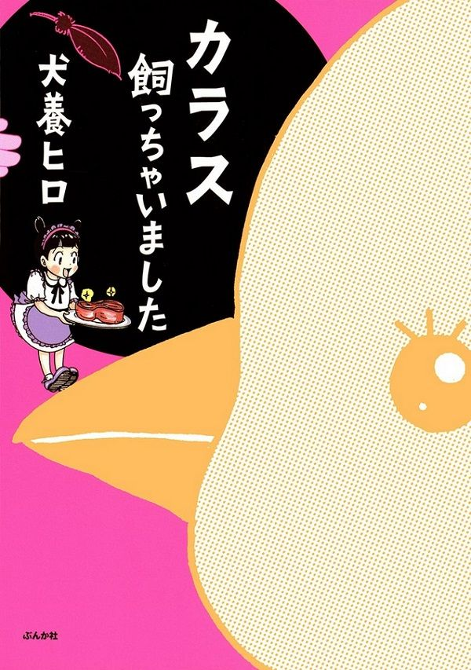
【著者】犬養ヒロ 先生
【出版社】ぶんか社
【ＫＩＮＤＬＥストア】 https://www.amazon.co.jp/dp/B0105ZQS7I/
カラスを飼ったらどうなるのか。
そんな誰もが一度は妄想するようなことを、実際にやっちゃっている作品です。
ある日のこと、犬養先生が二匹の犬と公園を散歩していると、突然犬たちが吠えだし、しげみの方へと向かっていきます。引っ張られるまま中に立ち入ると、そこには傷ついたカラスの雛の姿が。
この子は大丈夫だろうかと様子を見ていると、横から近所の住民らしきおばさんたちが現れ、適当なことを言い出しました。
「そのカラス、うちの猫が噛んじゃって昨日からずっとそこにいるのよね
」
「ここで死なれても困るのよね
」
「黒くて気味が悪いわ
」
「あなたどっか連れてってよ
」
勿論、「なんで私が！」と思った犬養先生ですが、傷はとても深そうで放っておくこともできません。
とりあえず病院に連れて行こうと捕まえると、木の上からその様子を見守っていた親ガラスから襲撃を受けました。
助けようとしているのに蹴られてついばまれて、ボロボロになりながらも近所の動物病院へ連れて行くと、そこの獣医はやる気がなく、触ろうともしてくれません。
ここはダメだと、続いて向かった専門病院では待たされること十時間以上。
やっと診てもらって告げられた診断結果は、「この子はもう一生飛べない、野生では生活できない」とのことでした。
それを聞いた犬養先生はカラスに「かぁこりん」と名付けて飼う（保護する）ことにするのですが......もうね、本当に凄いよ犬養先生！
別に通りがかっただけなのに、背負う必要はないじゃないですか。親ガラスに攻撃されて、ヤブにも診察代を払って、投げ出しても赦されそうなタイミングが何度もあったじゃないですか。
運命
だったんでしょうね。
子供の頃から動物が大好きで、お小遣いをもらうと金魚やカメやザリガニを買い、親に無断でインコを購入して押入れの中で飼い始めるなど、筋金入りの動物愛を持った犬養先生だったからこそ導かれた出会いだったのでしょう。
実際、普通の人はカラスを飼えないと思います。気性が荒くて直ぐに攻撃してくるし、部屋中に糞尿や抜け毛を撒き散らして寿命は４０年......中途半端な気持ちで保護しようなんて絶対に思わないことですね。
犬養先生が特殊なんです。だってカラスだけじゃなく、犬も猫も複数匹とハムスターまで飼っていて、さらには作中で子供が出来て育児までしているぐらいですから。
――それにしても、かぁこりんが超絶可愛い
です。
「グェーッ」
とか「ガーッ」
とか朗らかに鳴いている
ときの嬉しそうな、幸せそうな顔が目に焼き付いて離れません。
僕の目にはカラスって凶暴な、恐ろしい生き物にしか見えないのですが、犬養先生にはこんなにも丸く、表情豊かに見えているんですね。
カラスだって心を通わすことが出来る。
クマやトラを手懐ける人がいるように、もしかしたらどんな生き物でも真剣に向き合えば仲良くなれるのかもしれませんね。
そう思うと素晴らしい世界のようで悲しい世界だなと、なんかそんなことまで考えさせられるほど、胸に染み入る読後感でした。
カラスを飼ってみたいと一度でも思ったことのある方、可愛いペットものが読みたい方、ぜひ！
【ＫＩＮＤＬＥストア】 https://www.amazon.co.jp/dp/B0105ZQS7I/
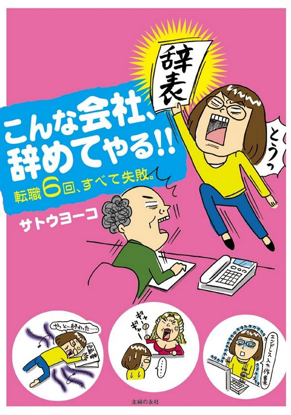
【著者】サトウ ヨーコ 先生
【出版社】主婦の友社
【ＫＩＮＤＬＥストア】 https://www.amazon.co.jp/dp/B007U5SLJU/
高校卒業後、美術系の専門学校に進学したサトウ先生。
将来はイラストレーターに成りたいと思っていたのですが、時代は就職氷河期。
次々に内定が決まっていく同級生たちを見て焦ってしまい、とにかく働かねばと一社目に就職しました。
そこでは水商売上がりの変な女課長から理不尽な指示の連続。ひたすら同じようなキャバクラの求人広告を作り続ける仕事に疲れ果て、一年で退職することに。
以降、転職を繰り返して表紙通りの「転職６回、すべて失敗
」が始まります。
周囲になんの配慮も出来ない脳筋でもなく、平気で人を裏切れるような自己中でもなく、繊細そうで気弱そうな人が傷つきながらも立ち向かっていく姿には勇気をもらえます。
まさに今、その一歩が踏み出せないという方にはとても力になる作品でしょう。
サトウ先生、本当に強いや。
「たった一度の人生だから―」とか思っても悪人には成れませんが、せめて成りたい姿に少しでも近付きたいものですよね。
あと、女子社員たちが団結してイヤな上司に仕返しする話
とかスゲー面白い
。なぜそれを上司の机の中に入れる？ 最高にセンスがいいやり口でした。
繰り返された転職の果てに、サトウ先生はどうなったのか!?
自分の仕事に誇りを持っている人も疑問を持っている人も、社会人なら誰もが楽しめる内容だと思います。
ぜひ！
【ＫＩＮＤＬＥストア】 https://www.amazon.co.jp/dp/B007U5SLJU/
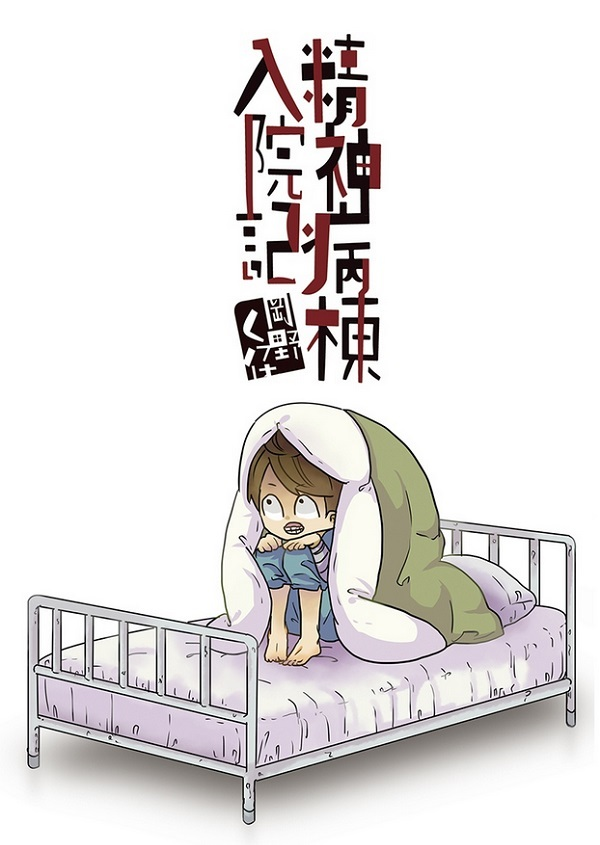
【著者】岡野く仔 先生
【出版社】まんだらけ
【ＫＩＮＤＬＥストア】 https://www.amazon.co.jp/dp/B071GJWQWC/
岡野先生は成績優秀な子でした。
中学では学年一位をとったり生徒会の役員にもなったりして、両親も「この子は出来る」と期待したのでしょう。
三年生になると進学先について親と揉め、自分の気持ちを押し殺してレベルの高い進学校を受験することになりました。
無事に合格はしたものの、激しいストレスから妙な強迫観念が止められなくなってしまい、十六歳の夏、精神病院へ入院することに。
その一か月間の入院生活で何があったのか、どんな人たちに出会ったのか、日常から隔離された世界を伝えてくれる作品です。
「キッチンシンクの三角コーナーにある生ゴミを食べなければ死ぬ」と思い込んでそれを実行したり、腕をザクザクと切り刻んだり、幸せになりたくて苦しむ複雑な心。
バラバラになりながらも、辛すぎる日々を表現に昇華させた岡野先生は本当にカッコいい
し、「入院して良かった」とか「みんなに感謝」みたいなヌルいところに行かないところも凄く素敵
でした。
視野も経験も幅がないゆえに、真っ直ぐに人を好きになれたし、恨むことも出来たあの頃。時間はとても長く、エネルギーは有り余っていますから、その強すぎる感情の刃が自分に向けられてしまったら二十四時間逃げ場がなく、本当に地獄のような苦しみだったことでしょうね
。
剥き出しで描かれるやるせなさや怒りに、血の臭いと共に青春の香りがする
作品。
精神病院に興味のある方、エグい表現や狂気に惹かれる方は勿論のこと、あの頃の無力感を味わいたい方も、ぜひ！
【ＫＩＮＤＬＥストア】 https://www.amazon.co.jp/dp/B071GJWQWC/
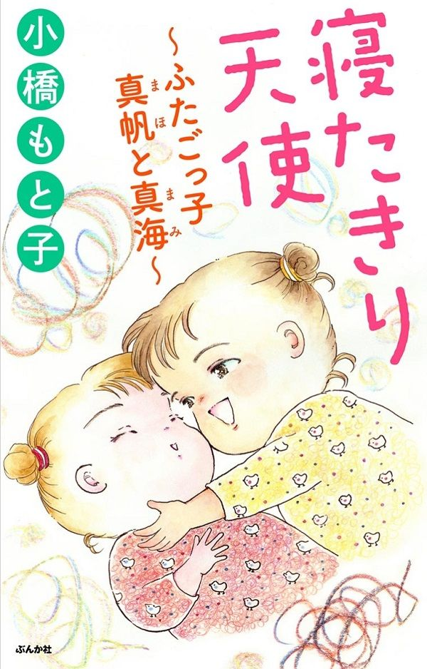
【著者】小橋もと子 先生
【出版社】ぶんか社
【ＫＩＮＤＬＥストア】 https://www.amazon.co.jp/dp/B01E8Q84PO/
二十四歳で双子の姉妹を出産した真樹さん。
お姉さんを「真帆」ちゃん、妹さんを「真海」ちゃんと名付けてその誕生を心から喜んでいたのですが、間もなく真帆ちゃんに「滑脳症
」という疾患が見つかり、医師からは余命半年から二年の命であると宣告されてしまいます。
どうしてうちの子が......幸福から一転、若くして壮絶な日々が始まります。
いやぁ、本当に辛い。
絵は綺麗だけど、綺麗事じゃ済まされない現実。
検査に行ったとき、見ず知らずのババアたちが心ない言葉を投げつけてくるシーンがあります。
「障害児だわ、大変ね
」
「妊娠中に悪い薬でも飲んだのかしらね
」
こんな人たちがいるのは想像にたやすいことですが、次に綴られた真樹さんの言葉にハッとさせられました。
『障害児を持つ母親には心のどこかにいつも自分のせいではないかと責める気持ちがあります
』
頑張っているお母さんたちがそんな思いを抱えられていること、想像してみれば直ぐに気付くはずのことなのに、部外者がそんな感情移入をすることも失礼に当たる気がして思い至らなかったです。
僕が通っていた小、中学校には障害者の子たちのクラスもあって、遠足などに親がついてくる姿をよく見ていました。
子供ながらに「大人なのに大変だな」とか思っていたのですが、今にして思えばそんな次元じゃないですよね
。
凄く感じの悪いおばさんがいたのを覚えているのですが、笑顔なんて作れなくて当然だし、立派な方だったのだとこの作品を読んで再認識しました。
真樹さんは、真帆ちゃんは真海ちゃんはその後どうなったのか。
巻末に「電子書籍発行によせて」と題して真樹さんのコメントがあるのですが――さりげない言葉に号泣必至
です。
ぜひ！
【ＫＩＮＤＬＥストア】 https://www.amazon.co.jp/dp/B01E8Q84PO/
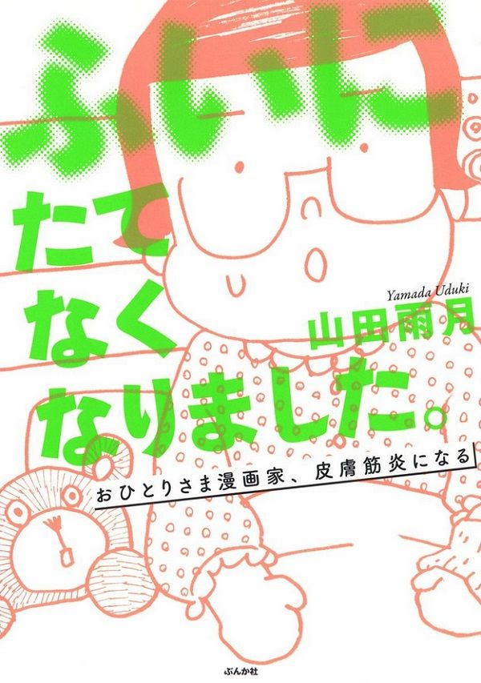
【著者】山田雨月 先生
【出版社】ぶんか社
【ＫＩＮＤＬＥストア】 https://www.amazon.co.jp/dp/B01K47D0KU/
山田先生がお風呂場で身体を洗っていると、スポンジで軽くお腹を擦っただけなのに腕に疲労感があったそうです。
当初は運動不足ぐらいにしか思っていなかったものが、気がつけば日常の些細な動きが何もかもしんどくなっていき、やがては枕から頭が上がらなくなり、階段も手すりにつかまらなくては登れなくなってしまいました。
さすがにこれはおかしいと思い病院で診てもらうと、診断結果は「皮膚筋炎
」。
それは筋力がどんどんと低下していく非常に珍しい難病で、進行すれば寝たきりになってしまう恐ろし過ぎるもの。
突然始まる入院生活――本当、人生ってなんでしょうね。
十代、二十代、三十代と普通に過ごしてきたのに、四十近くになってから突然の発症だなんて......これが運命だというのなら、事前に教えてもらいたいものですよね。
部屋が暗くなって初めて気付く灯りがあるように、心ある人々、ご家族のサポートに涙が出ます。
また、この作品を読んで初めて「ヘルプマーク」というものの存在を知りました。
知識があれば思いやれることも力になれることもあるだろうに、こんなことですらきっかけがないと知ることも出来ない。
パッと見は普通の人でも、実際にどんなハンディキャップを抱えているかなんてわからないですからね。この作品を読んで、いろんな病気で苦しんでいる人ってきっと沢山いるんだろうなと思えるきっかけもいただきました。
月並みな表現ですが、こんな想像を絶するような重い病気を患ったのが山田先生のような分かりやすく面白く、前向きに伝えてくださる才能であったということは、同じような苦しみを抱えている方々にとって光
ですよね。
もしも今病床で不安を抱えている方がこの文章をご覧になっていたら、キンドルストアへジャンプです！
壮絶な運命を読みたい方、闘病中じゃない方も、ぜひ！
【ＫＩＮＤＬＥストア】 https://www.amazon.co.jp/dp/B01K47D0KU/
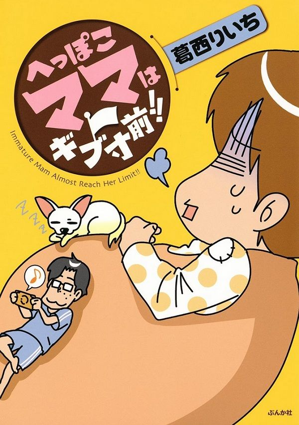
【著者】葛西りいち 先生
【出版社】ぶんか社
【ＫＩＮＤＬＥストア】 https://www.amazon.co.jp/dp/B01AUP703Y/
肉体的にも精神的にも相当にハードな日々を、可愛い絵とギャグ漫画テイストのドタバタ感でポップに見せてくれる作品です。
そもそも「ギブ寸前
」ってタイトルが凄くいいですよね。「限界」とか「ウンザリ」とか言っちゃわないところが。
臨月まで続くつわりに、妊娠糖尿病
、産褥熱
......出産後も育児疲れのところに旦那さんの単身赴任が決まるなど、次から次へと押し寄せてくる試練の数々。
どれか一つあるだけでも不安に押し潰されそうになってしまう妊婦さんも多いことと思いますが、この作品を読めば大丈夫！ 全部を明るい雰囲気で表現されているので、きっと気持ちが楽になります。
だけど葛西先生、別に楽天的な方ではないようです。
後半からは旦那さんを主人公としたお話が少しあるのですが、そこでは赤ちゃんの夜泣きに疲れ果て、神経が張り詰めている葛西先生の姿が客観的に描かれていてゾクッときます
。
主人公を変えないと表現出来ない本当の顔。凄く繊細で気を遣う方なんだろうなと感じました。
――だからこそ、婦人科検診にヒゲもワキ毛もヘソ毛もボーボーで行く
ところとか、スゲー面白い！
妊娠、出産に不安を抱えている方も、目の前の現実にギブ寸前な方も、ぜひ！
【ＫＩＮＤＬＥストア】 https://www.amazon.co.jp/dp/B01AUP703Y/
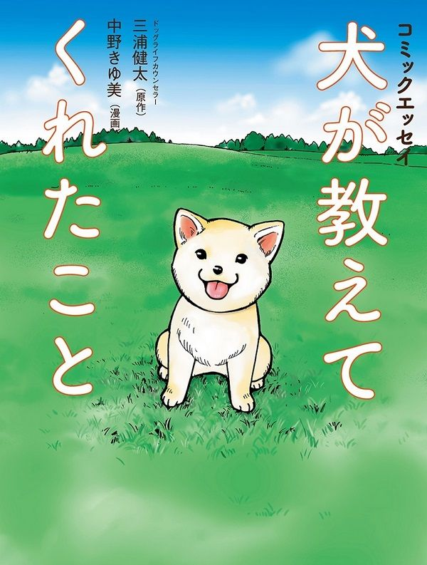
【著者】原作 三浦 健太 先生 ／ 漫画 中野 きゆ美 先生
【出版社】アスコム
【ＫＩＮＤＬＥストア】 https://www.amazon.co.jp/dp/B012FHNQPQ/
リアルに描かれたワンちゃんの愛らしい仕草や表情と一緒に、沢山の気付きと感動を届けてくれる作品です。
ドッグライフカウンセラーの「三浦健太」先生が実際に携わった事例をもとに描かれているとのことですが、これ、マニュアルとして犬の登録をするときに全国で配布してもらえないですかね。
犬を犬として見るのではなく、その子自身として見ること。
僕はその「見方」を知らず、気付けず、今も後悔し続けている記憶があります。
高校性の頃、室内で飼っていた犬が散歩に連れて行こうとすると走り回って机の下に隠れてしまうことがありました。
捕まえようとしても逃げて逃げてなかなか捕まえられず、イライラがピークになったところで立ち上がろうとした僕は、思い切り机に頭をぶつけてしまいました。
自業自得のただの馬鹿なのですが、僕はその怒りを犬に向け、小さなその頭を強く叩きました。凄く痛かったでしょう。三、四回は叩きました。完全な八つ当たりなのに、そのときは「叩かないと分からないんだ！」ぐらいに思いました。
今でも思い起こせば、そのときのギュッと目をつぶる犬の顔が浮かびます。
人間相手には決して出来ないことを、「犬だから」と思ってやりました。死ぬまで拭えない最低の記憶です。
この作品に出てくる飼い主さんたちも、同じような勘違いをしている方が多かったように感じました。
「うちの犬はワガママな犬だ」とか、「臆病な犬だ」とか、ありふれた「犬」のイメージでしか見ることが出来ない。
これって、実は人間関係でもやりがちなことですよね。
「先生だから」、「上司なのに」、「部下のくせに」......自分に都合の良いイメージに当てはめて、相手自身の性格や特徴を見ようとしない。そんなことをしているから、人間同士ですら心を通わすことが出来ない。
健気でものを言わないゆえに、ワンちゃんたちはその姿を通して本当にいろんなことを教えてくれますよね。
自分に子供が出来たときには、絶対に読ませたい作品です。
犬が苦手じゃないすべての方へ、ぜひ！
【ＫＩＮＤＬＥストア】 https://www.amazon.co.jp/dp/B012FHNQPQ/
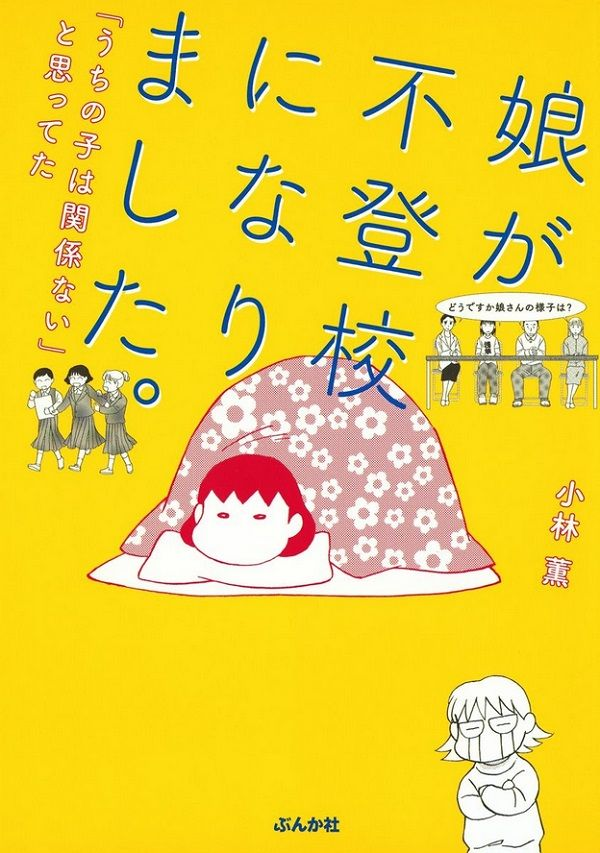
【著者】小林薫 先生
【出版社】ぶんか社
【ＫＩＮＤＬＥストア】 https://www.amazon.co.jp/dp/B01M9ANDCD/
小林薫先生が不登校になった娘さんをなんとかしようと奮闘する作品です。
自分にも中高大と私立に進学しながら、一度も働くことなくニートを続けている姉がいますので、全く他人事とは思えずハラハラしながら読みました。
ぜひキンドルアンリミテッドで読める小林薫先生のもう一冊のエッセイ「夫がまったく働きません。 ～大黒柱かーちゃんと、元うつ病ダンナ～
」も読んでいただきたいのですが、そもそも別れた旦那さんがずっと働かずに家にいて、何もしない方でした。
それが大人のモデルになってしまったのか、同じ行動を取ることで懐かしんでいるのか、愛情を確認する手段になってしまったのか――誰もが思うであろう「父親の影響」を、娘さんの不登校とは一切関連付けずに描かれた
ところに、何よりも強く、深い愛情を感じました。
我が家の場合父は徹底して無関心を貫いており母だけが頑張っていたのですが、女同士だと言い争いも会話のような、外に出ない姉にとっては有り余るエネルギーのいい発散の場にしかなっていないようでした。
小林先生のご家庭も怒号が飛び交っているような状況だったようですが、よくぞここまで立ち上がらせることが出来たと、尊敬の念に堪えません。
それはきっと言葉じゃなくて、お母さんが命がけで信じ続けてくれたこと、なんとかしようと向かい続けてくれる姿に心を動かされたからなのでしょうね。
巻末にカウンセラーの方のコラムがあるのですが、「何も言わずに見守る」なんて全ての子供に当てはまることじゃありません。（うちの場合は「何も言ってくれなかった」と親をイジメ続けてアラフォーです）
前述のワンちゃんとの接し方と同じように、「不登校になりやすい子」なんてイメージに当てはめて接していたら、その子自身と向き合うことがなければ、心を通わすことなんて出来ないでしょう。
不登校のお子さんを抱えている方は勿論のこと、あの頃見えなかった親の苦労をしみじみと思う方も、ぜひ！
【ＫＩＮＤＬＥストア】 https://www.amazon.co.jp/dp/B01M9ANDCD/
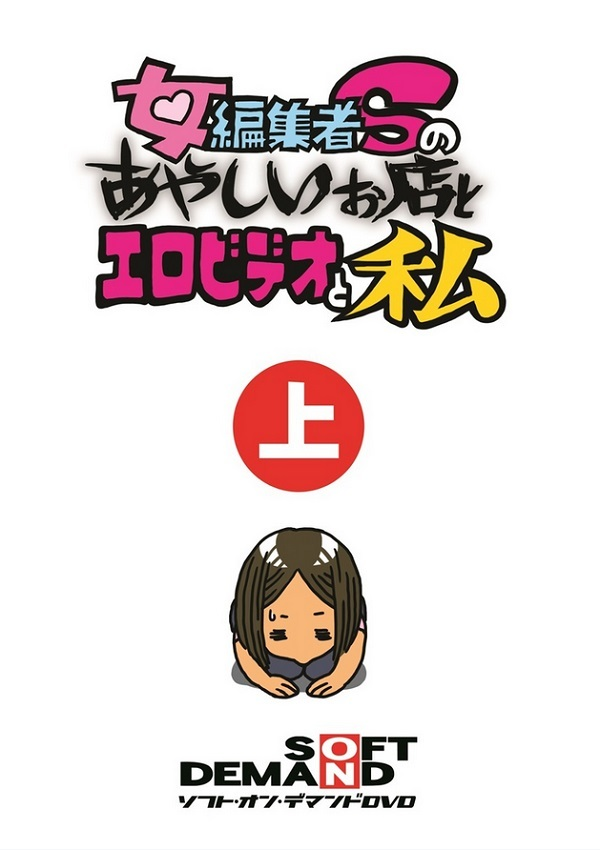
【著者】ソフト・オン・デマンドＤＶＤ編集部 Ｓ 先生
【出版社】MTEX
【ＫＩＮＤＬＥストア】 https://www.amazon.co.jp/dp/B00LAN0OP2/
アダルト業界の雄、「ソフト・オン・デマンド」社の発行している雑誌の編集者Ｓ先生が、あやしいお店の体験記やアダルトビデオ撮影の裏側をレポートしてくれる作品です。
上巻のあやしいお店たちの雰囲気、すごく好きです。
僕自身も新宿で働いていた頃、友人たちとこの手のお店にドキドキしながら潜入したことが数回あったのですが、そのときの興奮やガッカリ感が甦ってきました。
薄暗い店内にひしめく恐いお姉さんや本能剥き出しのおっさん達。
同じ時間軸に存在しているとは思えない、モラルがねじ曲がった不思議な世界。
性的な表現が苦手な方以外は楽しめると思いますが、字もコマも非常に小さいので、スマホで見るにはちょっとキツいかも。
ページ数はすごく短いのですがその分１ページ１ページの中身が濃いので、極端にボリューム不足を感じることはありませんでした。
リアルな異世界を覗いてみたい方、ぜひ！
【ＫＩＮＤＬＥストア】 https://www.amazon.co.jp/dp/B00LAN0OP2/
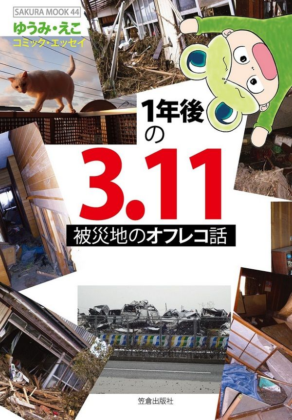
【著者】ゆうみ・えこ 先生
【出版社】笠倉出版社
【ＫＩＮＤＬＥストア】 https://www.amazon.co.jp/dp/B01JZ605VI/
ゆうみ・えこ先生は、宮城県仙台市在住。実際にあのとき現場にいた、地元の方ならではのリアルな体験、振り返っての感慨が読める作品です。
給水に２～３時間は当たり前。スーパーに９時間並んでも少しの乾麺と缶詰しか手に入らず、ガソリンスタンドには１００台以上の長蛇の列――描きようによってはいくらでも悲惨に描ける壮絶な状況を、あまりウェットになりすぎないよう距離を取って描かれているのか、可愛らしくスッキリとした絵柄で非常に読みやすく伝えてくれます。
それでも極限の状況下では飾らずとも飾らずとも感動的なことや奇跡的なことがあるもので、思わず涙があふれます。
また、のこぎりを持って水死体の指から指輪をもぎ取る人たち
や、津波から逃げようと目の前を走る人々を轢きながら進んでいった車
など、テレビでは語られることのない残酷過ぎるエピソード
も。
一つ一つが日常を超えた圧倒的なリアルの中、最後に描かれるのが悲惨な現場で休まずに救助活動を続けていた自衛隊の方々というところにグッときました。
いつまでも胸に残り続けるのは、やはりお金でも物でもなく、こういうこと
ですよね。
死にたくはないけど、長生きをするためだけに生きているわけじゃない。
優しさを分け合えるように生きてこそだなと、深く感じ入りました。
ぜひ！
【ＫＩＮＤＬＥストア】 https://www.amazon.co.jp/dp/B01JZ605VI/
いかがでしたでしょうか。
いやぁ、こんなにも素晴らしい作品たちが読み放題で読めるなんて、キンドルアンリミテッドって本当に素晴らしいものですよね。
僕はノンフィクションやドキュメンタリーが好きなのですが、エッセイ漫画は文字よりも映像よりも、絵を通して作者の方自身の感情がダイレクトに伝わってくるようで大好きです。
書評内でも触れさせていただきましたが、犬養ヒロ先生が描く「かぁこりん」の愛らしさは写真や文字だけでは汲み取れないものですし、小林薫先生の不登校の娘さんへの深い愛情も言葉以上に伝わってきます。
全ては憶測に過ぎない一方的な幻想なのかもしれませんが、その想像の余地の分だけ自由に感情移入ができて、心が動かされるんですよね。
だからまた、このようなエッセイ漫画の書評集を出させていただきたいと思っております。
さて、今回ご紹介させていただきました素晴らしい作品たちに感性が揺さぶられたそこのあなた！
やっと会えたね。
これからは僕たちの時代であります。
最後までご覧いただきまして、誠にありがとうございました。
何気に本書、シリーズの二作目でございます。
一作目はエッセイ漫画だけではなく、幅広いジャンルの素晴らしい作品を１７作品ご紹介させていただきました。
「おすすめ コミック １７選！「この漫画が凄い、ヤバい、面白い！」
」
よろしかったらぜひご覧くださいませ。
また、ここまで読んでくださったあなた様は僕と感性が近しい方だと思いますので、どうぞこちらにも遊びに来てください。
【ブログ】 電子書評
【ツイッター】 山岡総一郎＠
電子書評
【メール】denshishohyo@gmail.com
それではまた！
著者 山岡総一郎
２０１８年３月２４日 第二版発行